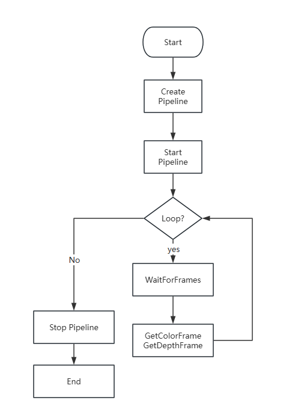

Quick starts
Introduction
Obtain Depth, IR, and Color data streams.
Obtain IMU data streams.
Hardware D2C, Software D2C, and Software C2D.
Obtain Depth point cloud and RGBD point cloud.
Obtain multiple devices data .
Coordinate transformations between different coordinate systems.
Post-processing filters and HDR merge functionality (supported by the Gemini 330 series).
Presets (supported by Gemini 330 series).
Update Firmware.
Build your First Camera Application
0.basic.quick_start show how to use the SDK to capture video streams with minimal code.
The data flow diagram for quick start sample is as follows:

// Create a pipeline to start the stream.
Pipeline pipeline = new Pipeline();
// Create configuration files for color and depth streams. 0 is the default configuration.
StreamProfile colorProfile = pipeline.GetStreamProfileList(SensorType.OB_SENSOR_COLOR).GetVideoStreamProfile(0, 0, Format.OB_FORMAT_RGB, 0);
StreamProfile depthProfile = pipeline.GetStreamProfileList(SensorType.OB_SENSOR_DEPTH).GetVideoStreamProfile(0, 0, Format.OB_FORMAT_Y16, 0);
// Enable color and depth streams for the pipeline by creating a configuration.
Config config = new Config();
config.EnableStream(colorProfile);
config.EnableStream(depthProfile);
// Start the pipeline with config.
pipeline.Start(config);
// Initialize the rendering window through the stream profile.
SetupWindow(colorProfile, depthProfile, out updateColor, out updateDepth);
Task.Factory.StartNew(() =>
{
while (!tokenSource.Token.IsCancellationRequested)
{
// Wait for up to 100ms for a frameset in blocking mode.
using (var frames = pipeline.WaitForFrames(100))
{
// get color and depth frame from frameset.
var colorFrame = frames?.GetColorFrame();
var depthFrame = frames?.GetDepthFrame();
// Render colorFrame.
if (colorFrame != null)
{
Dispatcher.Invoke(DispatcherPriority.Render, updateColor, colorFrame);
}
// Render depthFrame.
if (depthFrame != null)
{
Dispatcher.Invoke(DispatcherPriority.Render, updateDepth, depthFrame);
}
}
}
};
Sample Features
# Sample Features
| Example | Description | level |
| --------------------- | ------------------------ |----------------|
| 0.basic.quick_start | Quickly use the camera to capture color and depth video streams.| ⭐ |
| 1.stream.color | Displays the color stream from the camera.| ⭐ |
| 1.stream.depth | Displays the depth stream from the camera.| ⭐ |
| 1.stream.imu | Demonstrates how to read IMU data.| ⭐ |
| 1.stream.infrared | Displays the infrared stream from the camera.| ⭐ |
| 1.stream.multi_streams | Use SDK to obtain multiple camera data streams and output them.| ⭐ |
| 2.device.control | The SDK can be used to modify camera-related parameters, including laser switch, laser level intensity, white balance switch, etc.| ⭐⭐ |
| 2.device.firmware_update | This sample demonstrates how to read a firmware file to perform firmware upgrades on the device.| ⭐⭐ |
| 2.device.hot_plugin | Demonstrates how to detect hot plug events.| ⭐⭐ |
| 3.advanced.coordinate_transform | Use the SDK interface to transform different coordinate systems.| ⭐⭐⭐ |
| 3.advanced.hw_d2c_align | Demonstrates how to use hardware D2C.| ⭐⭐⭐ |
| 3.advanced.multi_devices | Demonstrates how to use multiple devices.| ⭐⭐⭐ |
| 3.advanced.point_cloud | Demonstrates how to save the point cloud to disk using a point cloud filter.| ⭐⭐⭐ |
| 3.advanced.post_processing | Demonstrates how to use post-processing filters.| ⭐⭐⭐ |
| 3.advanced.camera_configuration | Demonstrates How to get camera parameters.| ⭐⭐⭐ |
| 4.post.processing.DecimationFilter | Demonstrates How to use DecimationFilter.| ⭐⭐⭐ |
| 4.post.processing.DisparityTransform | Demonstrates how to use DisparityTransform.| ⭐⭐⭐ |
| 4.post.processing.HDRMerge | Demonstrates how to use HDRMerge.| ⭐⭐⭐ |
| 4.post.processing.HoleFillingFilter | Demonstrates how to use HoleFillingFilter.| ⭐⭐⭐ |
| 4.post.processing.SequenceIdFilter | Demonstrates how to use SequenceIdFilter.| ⭐⭐⭐ |
| 4.post.processing.SpatialAdvancedFilter | Demonstrates how to use SpatialAdvancedFilter.| ⭐⭐⭐ |
| 4.post.processing.TemporalFilter | Demonstrates how to use TemporalFilter.| ⭐⭐⭐ |
| 4.post.processing.ThresholdFilter | Demonstrates how to use ThresholdFilter.| ⭐⭐⭐ |